Bem-vinda(o) ao meu portfólio!
Oie, eu sou a Letícia Caetano
Sou estudante de Análise e Desenvolvimento de Sistemas na Fatec Taubaté e, a cada dia, estou explorando um pouco mais o universo da tecnologia e construindo minha jornada na programação :)
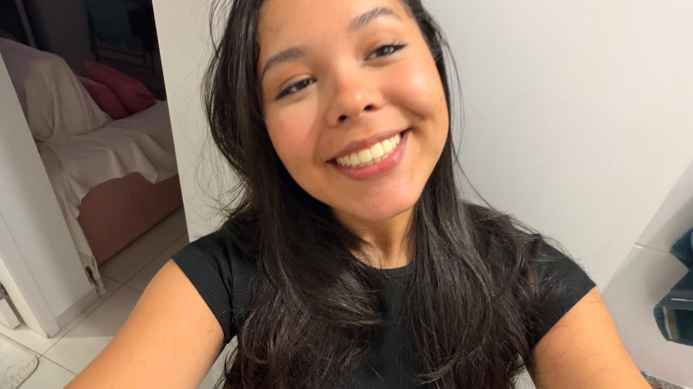
Quem é a Letícia no campo profissional?
E a Letícia fora da área profissional?
Por trás dos códigos, cursos e tecnologias existem muitas coisas pelas quais sou apaixonada! Nesse espaço quero compartilhar um pouquinho mais do que gosto de fazer e dos meus interesses pessoais :)
Música ♫
Tenho uma grande paixão por música e acredito que não tem como falar sobre mim sem falar dela também. Tenho um monte de playlists no Spotify, inclusive! Meus artistas favoritos são Harry Styles, Louis Tomlinson e Rita Lee, mas não me prendo a um só estilo: escuto de tudo!
“A noite é uma criança distraída.”
Rita Lee · Coisas da Vida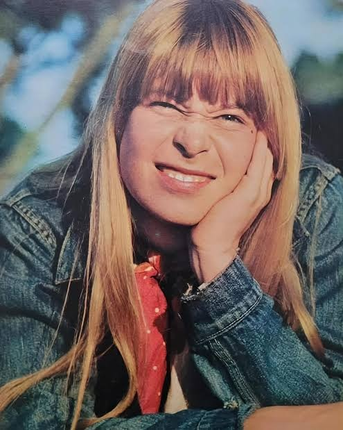
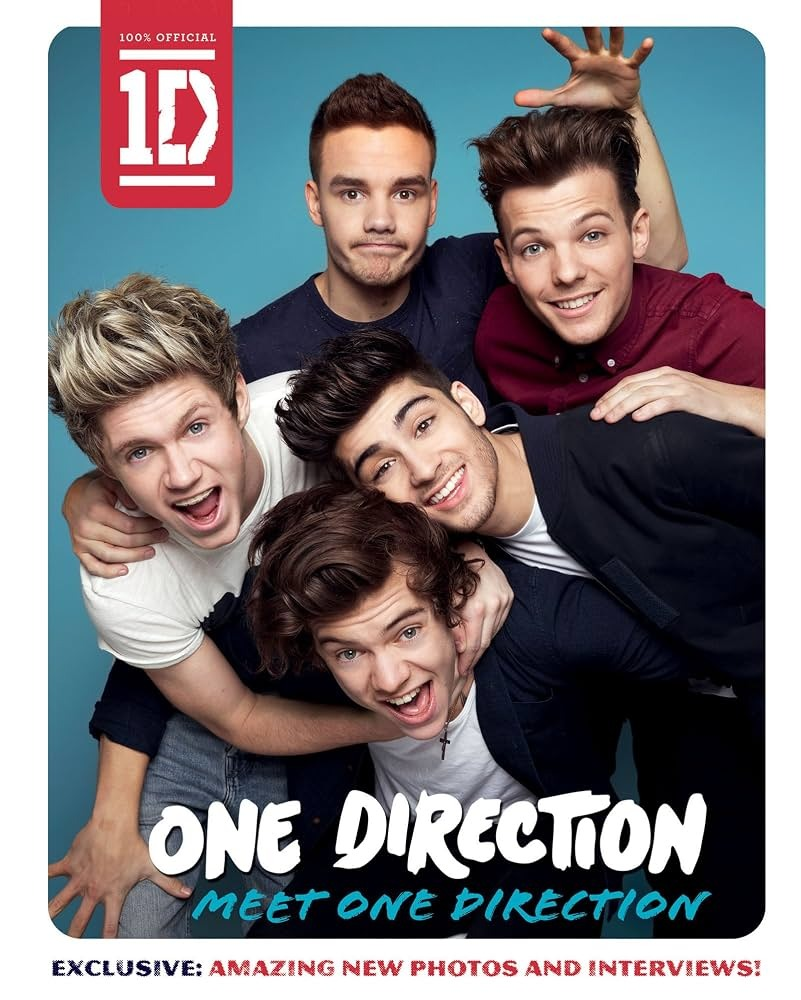
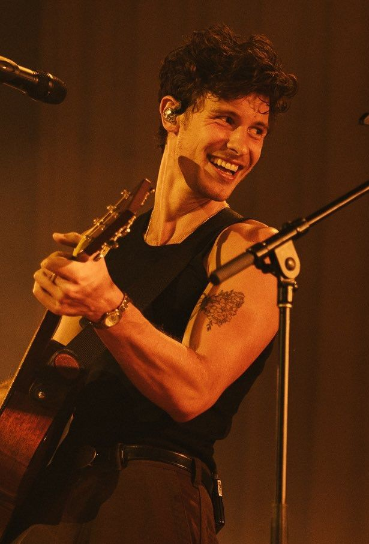
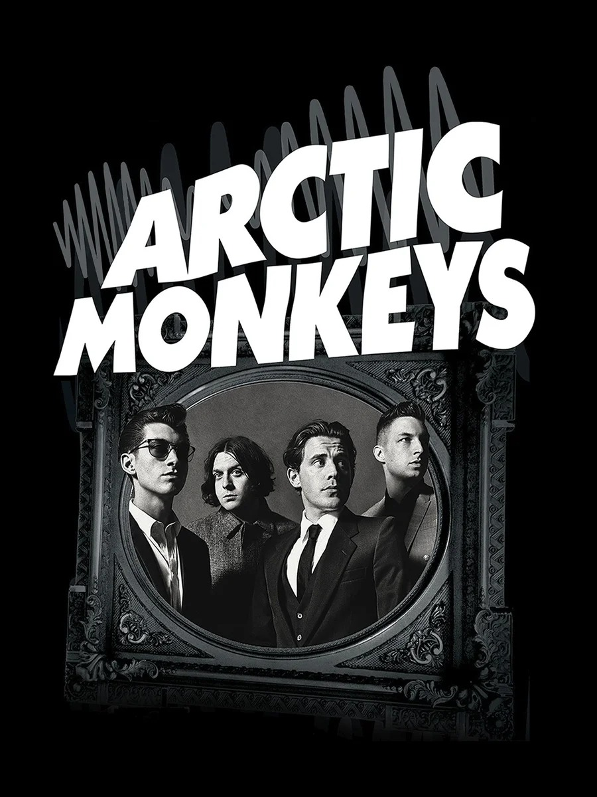
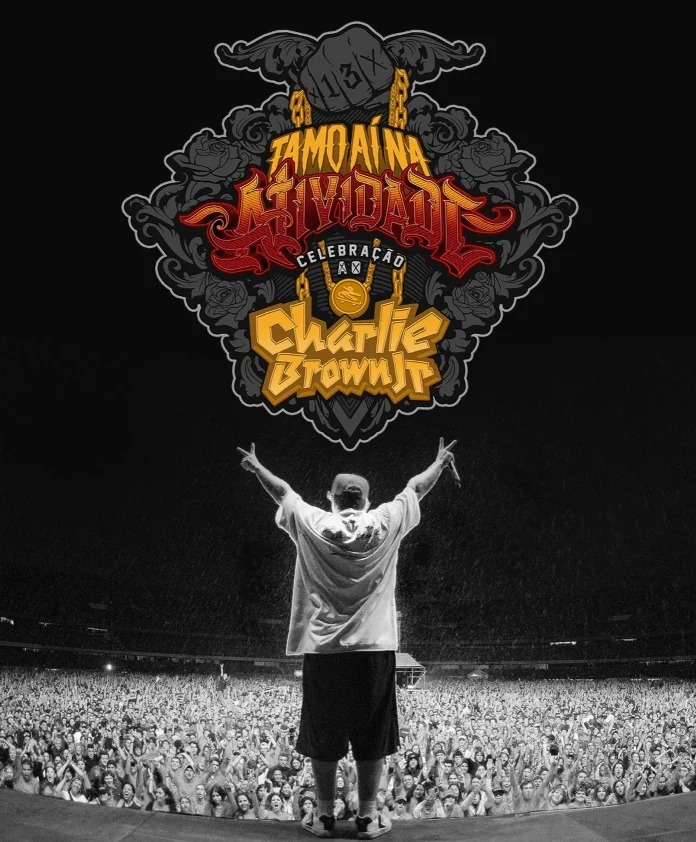
Hobbies ♡
No meu tempo livre gosto muito de ler, assistir filmes e séries. Confesso que adoro rever histórias que já conheço! Minhas séries favoritas são Supernatural e Brooklyn Nine-Nine. Entre os filmes, estão Como Perder um Homem em 10 Dias, Esqueceram de Mim 2: Perdido em Nova York e Capitão América 2: O Soldado Invernal. Já meus livros favoritos são Os Sete Maridos de Evelyn Hugo e Daisy Jones & The Six.
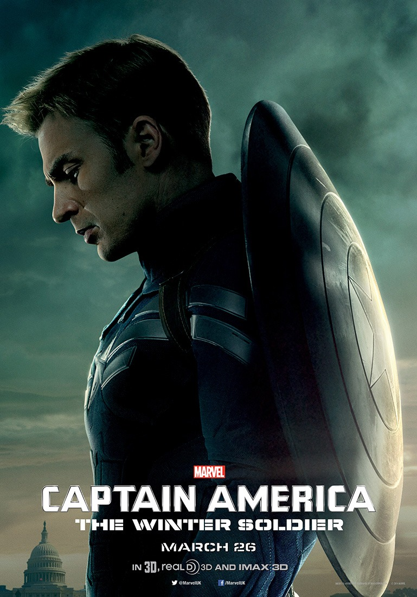
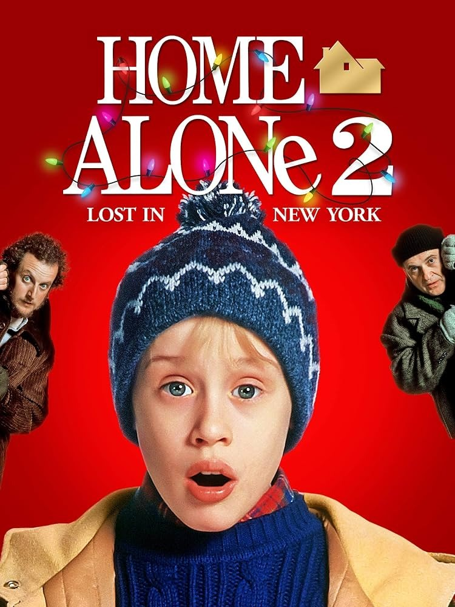
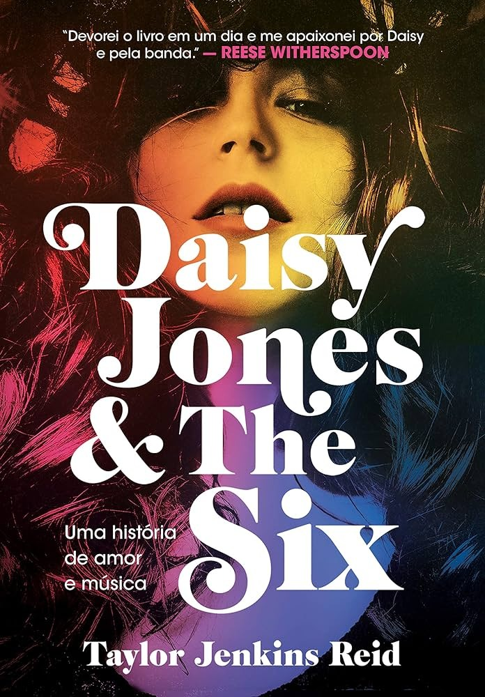
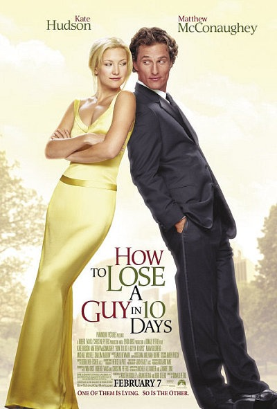
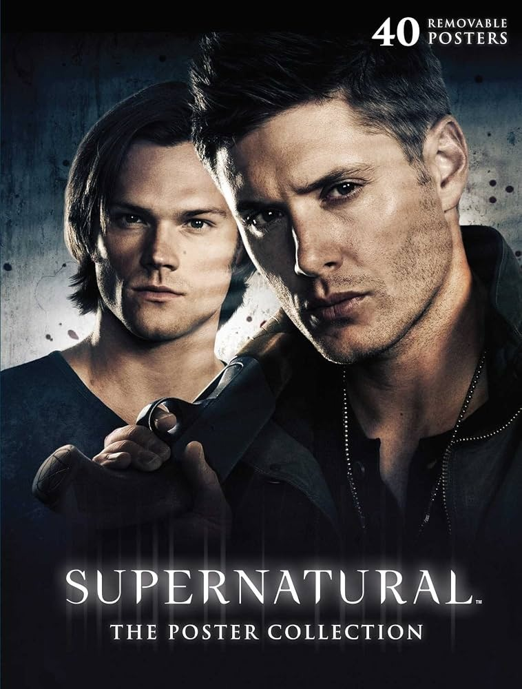
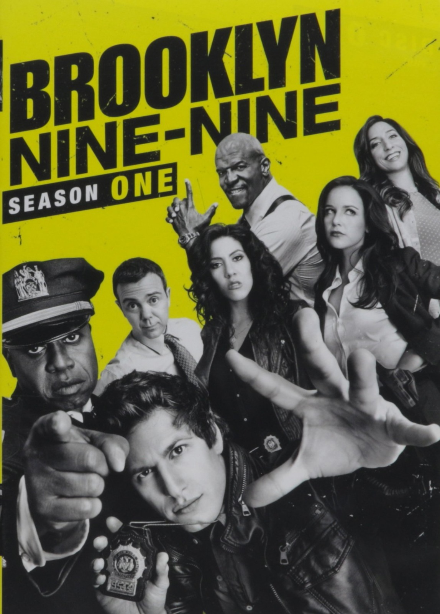
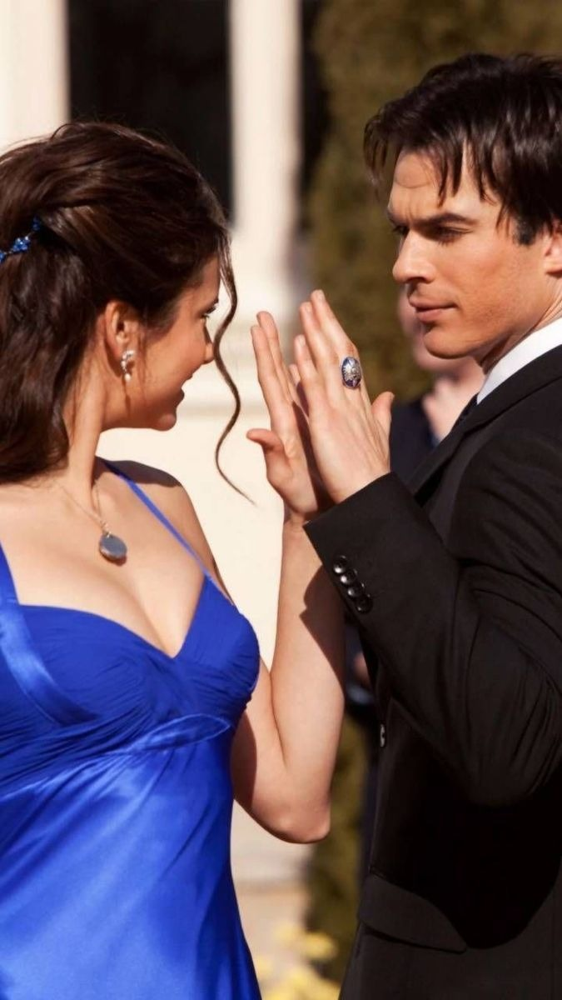
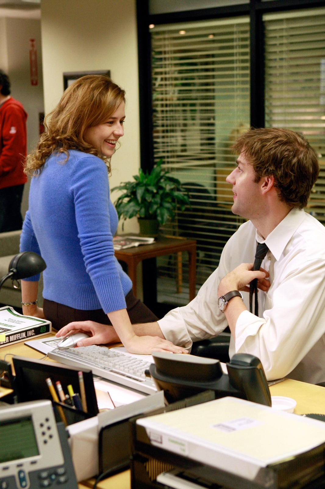
Meus projetos!
Conheça os projetos que estou desenvolvendo durante minha jornada!
Vamos nos conectar?
Gostou de conhecer um pouco sobre mim? Entre em contato e vamos conversar ;)